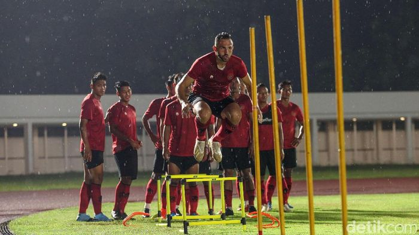

Timnas Indonesia Masih Mau Maksimal di Kualifikasi Piala Dunia 2022

Sumber :https://www.detik.com/
Timnas Indonesia sudah dipastikan tersisih di Kualifikasi Piala Dunia 2022. Namun, Skuad Garuda masih mau maksimal di sisa laga.
Timnas Indonesia masih punya tiga laga sisa Kualifikasi Piala Dunia 2020, yakni bertandang ke markas Timnas Thailand (matchday ke-7), menjamu Timnas Uni Emirat Arab (UEA) (matchday ke-8), dan terakhir dijamu Timnas Vietnam (matchday ke-9
Pasukan Garuda belum meraih sebiji poin pun lantaran kalah lima kali berturut-turut. Mereka kalah 2-3 dari Malaysia, 0-3 dari Thailand, 0-5 dari UEA, 1-3 dari Vietnam, dan terakhir kalah 0-2 dari Malaysia
Hasil itu membuat Indonesia terpuruk sebagai juru kunci Grup G dan sudah tak punya harapan melaju ke babak selanjutnya. Meski begitu, hasil tiga laga sisa bisa berpengaruh terhadap keikutsertaan Timnas Indonesia di Kualifikasi Piala Asia 2023.
"Ketua Umum PSSI memberi arahan kepada kami (Departemen Teknik) serta tim pelatih supaya merencanakan program persiapan Timnas Senior Indonesia. Setelah mengikuti ajang ini tidak berselang lama Timnas Indonesia juga akan turun di Piala AFF yang direncanakan mulai bulan November 2020," kata Indra Sjafri seperti dikutip dari situs resmi PSSI.
PSSI tetap menganggap penting tiga laga sisa pertandingan Kualifikasi Piala Dunia 2022. Sebab, hasilnya akan menentukan perbaikan peringkat Indonesia pada ranking FIFA.
"Ketua Umum PSSI menaruh perhatian tinggi, agar peringkat Indonesia membaik, setidaknya menembus rangking 150 FIFA," tambah Plt Sekjen PSSI, Yunus Nusi
kembali


 Copyright@2020
Copyright@2020